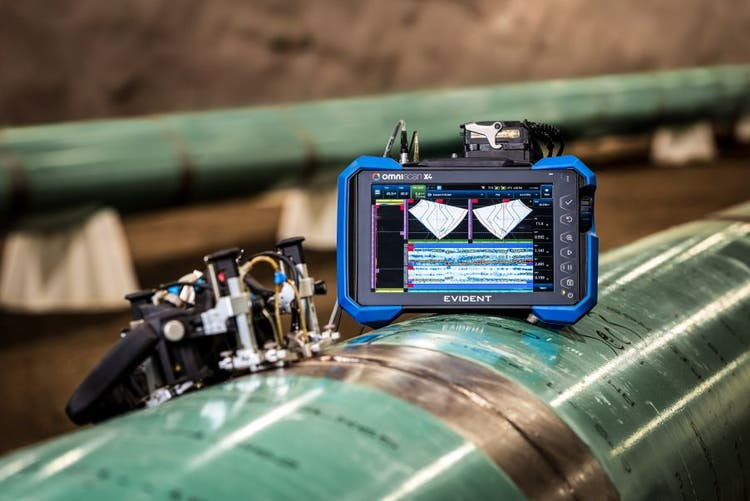

At INTERNATIONAL INSTITUTE OF PAUT NDT, we specialize in advanced Phased Array Ultrasonic Testing (PAUT) services for accurate flaw detection and weld evaluation.
Advanced Weld Inspection:
Detecting cracks, lack of fusion, porosity, and other weld discontinuities.
Corrosion Mapping:
Evaluating corrosion damage and wall thickness variations in components.
Complex Geometry Inspection:
Inspecting components with challenging shapes and configurations.
High-Resolution Defect Imaging:
Providing detailed scan images for accurate defect characterization.
Pipeline and Pressure Vessel Inspection:
Ensuring the integrity and safety of critical industrial assets.